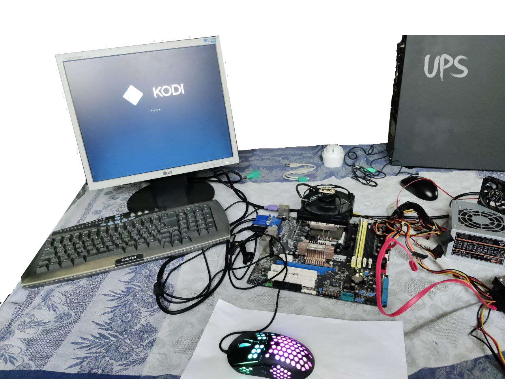
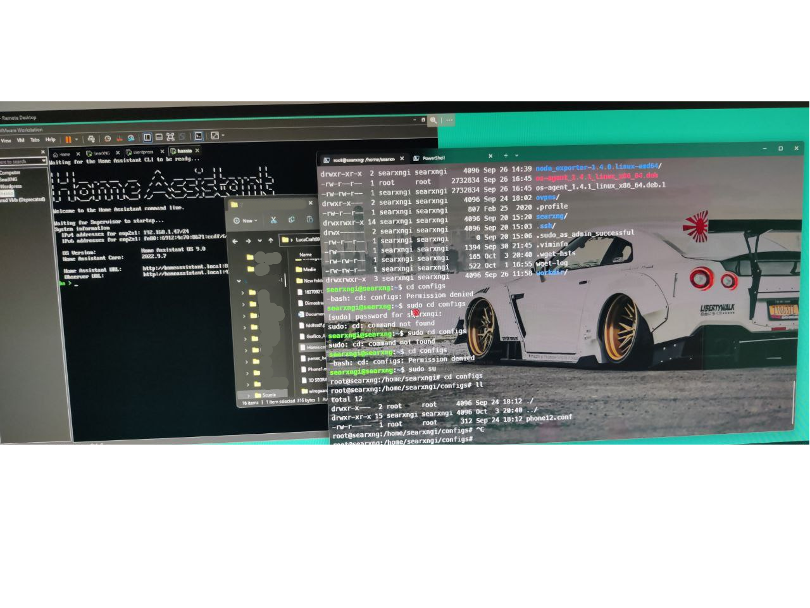
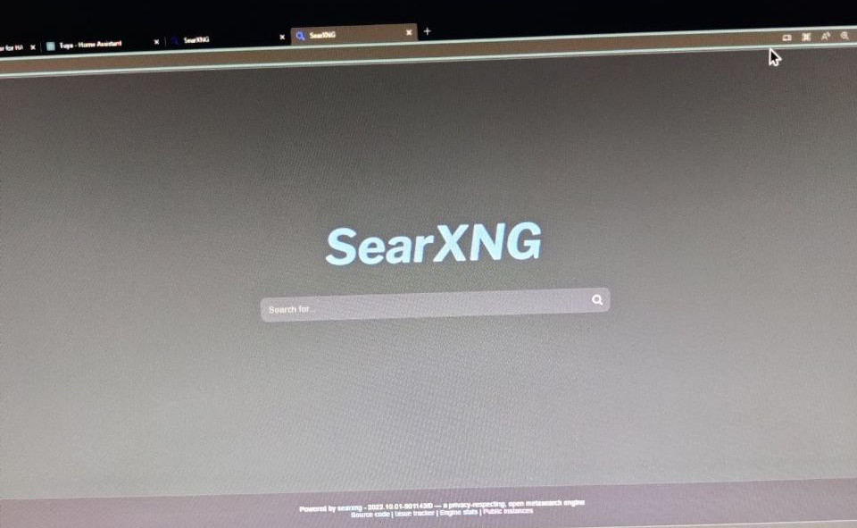

<body style="background-color:black"></body>
<font color="white"><br/>
<h1>Tolldrift's website</h1>
<font size="6"><p> In this month I had built my first home server and that's the reason:<br></font>
    <font size="5">
    -To check you’re devices(ᴛᴏ ᴄʜᴇᴄᴋ ᴀʟʟ ᴄᴏɴɴᴇᴄᴛᴇᴅ ᴅᴇᴠɪᴄᴇꜱ ɪɴ ʏᴏᴜʀᴇ ʜᴏᴜꜱᴇ ᴀɴᴅ ᴍᴀɴᴀɢᴇ ɪᴛ)<br>
    -It is inexpensive (ʙᴇᴄᴀᴜꜱᴇ ᴀ ʏᴏᴜ ᴄᴀɴ ᴜꜱᴇ ᴀɴ ᴏʟᴅ ᴘᴄ)<br>
    -Create gaming server(ʙᴇᴄᴀᴜꜱᴇ ᴀ ʏᴏᴜ ᴄᴀɴ ʜᴏꜱᴛ ᴛʜᴇ ʀᴏᴏᴍ'ꜱ ɪɴ ᴀʟʟ ᴏꜰ ᴛʜᴇ ɢᴀᴍᴇ'ꜱ)<br>
    -Keep data backups(ʙᴇᴄᴀᴜꜱᴇ ʏᴏᴜ ᴄᴀɴ ʜᴀᴠᴇ ᴀʟʟ ᴏꜰ ʏᴏᴜʀᴇ ᴅᴀᴛᴀ ᴡʜᴇʀᴇ ᴀɴᴅ ᴡʜᴇɴ ʏᴏᴜ ᴡᴀɴᴛ)<br>
    -To learn(ʙᴇᴄᴀᴜꜱᴇ ʏᴏᴜ ᴄᴀɴ ʟᴇᴀʀɴ ʜᴏᴡ ᴛᴏ ʙᴇᴄᴏᴍᴇ ᴀ ᴅᴇᴠᴇʟᴏᴘᴇʀ)<br>
</font>
    <font size="6">Specs of my own server<br></font>
    <br>
    <font size="5">
    It is a simple old pc with AMD(4 cores 8 threads), 8 GB of ram, 1TB of SSD and 500w PSU.<br>
    Basically it has a windows server installed with 2 partitions ghosted where I had installed a linux server for hosting all of my website and BOT (discord).<br>
    I had installed Home Assistant to check devices, SearXNG (browser) to browse without providing your data and I use SSH (secure shell) to browse my data.<br>
</font></p>
    
    
    
<br/></font>

<font color="white">
    <font size="2">
        <p>
            Copiright© 2022 Tooldrift
        </p>
</font>

    